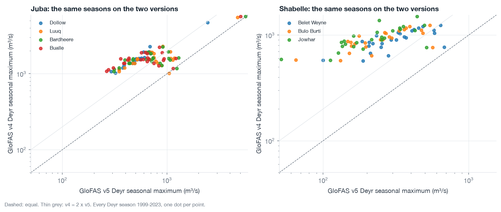
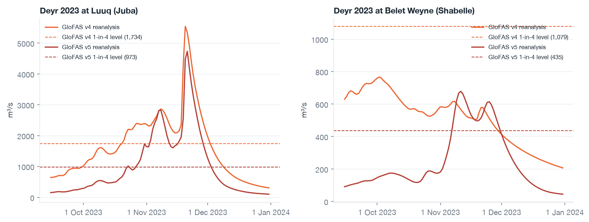
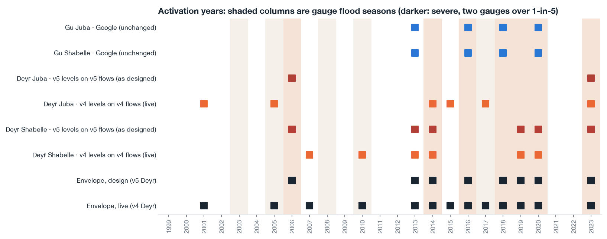

What is live
Checked on 14 September 2026. The EWDS forecast dataset offers one operational system version plus legacy
versions 2.1 and 3.1; there is no legacy version 4 stream, which there would be if version 4 had been retired. The
EWDS reanalysis dataset labels version 4.0 Operational and version 5.0 Pre-operational. ECMWF's
latest-release page names
v4.5 (16 April 2026), and CEMS has announced that v5.0 will become operational after pre-operational testing with
v4 run in parallel for a period. The operational GRIB carries no version string, only process identifiers
(generatingProcessIdentifier 5, backgroundProcess 21), which the pipeline records with every row.
GLOFAS_OPERATIONAL in src/monitoring/config.py); both level sets are frozen in
src/monitoring/thresholds.json.The two climatologies
Version 4 runs 2.5 times higher than version 5 on the Deyr seasonal maxima at these points, and nearly flat along each river where version 5 decreases downstream. The versions share the river network here, so every comparison is at the same cell. A level fitted on one version is meaningless on the other.


Deyr action levels, both versions
Levels at each point's Deyr return period, fitted on the Deyr seasonal maxima 1999–2023 of each version's own reanalysis (Weibull plotting position, as in the trigger analysis). The live column is highlighted. The last column is the readiness level, fitted on the version 4 reforecast at leads 8–12 days, which the trigger page already used and which is consistent with a version 4 live forecast.
| River | Point | RP | v5 level (design) | v4 level (live) | v4 / v5 | v5 Deyr mean | v4 Deyr mean | Readiness level (v4 band, 8–12 d) |
|---|---|---|---|---|---|---|---|---|
| Juba | Dollow | 1-in-4 | 601 | 1,736 | 2.89x | 259 | 890 | 1-in-4: 1,499 |
| Juba | Luuq | 1-in-4 | 973 | 1,734 | 1.78x | 320 | 895 | 1-in-4: 1,517 |
| Juba | Bardheere | 1-in-4 | 966 | 1,730 | 1.79x | 328 | 906 | 1-in-4: 1,532 |
| Juba | Bualle | 1-in-4 | 871 | 1,725 | 1.98x | 313 | 914 | 1-in-4: 1,551 |
| Shabelle | Belet Weyne | 1-in-4 | 435 | 1,079 | 2.48x | 149 | 471 | 1-in-4: 957 |
| Shabelle | Bulo Burti | 1-in-4 | 366 | 1,079 | 2.95x | 116 | 476 | 1-in-4: 968 |
| Shabelle | Jowhar | 1-in-4 | 337 | 1,122 | 3.33x | 104 | 487 | 1-in-4: 978 |
Gu readiness levels (GloFAS carries readiness only in Gu; Google carries the action leg): Dollow 1,862, Luuq 1,881, Bardheere 1,921, Bualle 1,966, Belet Weyne 512, Bulo Burti 519, Jowhar 589 m³/s at 1-in-5, version 4 readiness band. On the reanalyses the same points sit at v4 2,177, 2,176, 2,175, 2,240, 663, 645, 647 and v5 783, 867, 822, 748, 462, 352, 318.
What the Deyr windows do on each version
Each window's adopted rule replayed on each version's own reanalysis with levels fitted on that version (the two consistent columns), and with the levels crossed over (the two inconsistent columns, which is what applying the design levels to the live forecast would have meant). Judged against the two-gauge benchmark: a flood season has two of the river's gauges over their own 1-in-3 level, a severe one two over 1-in-5, levels fitted 2000–2023.
| Window | v5 levels on v5 flows design | v4 levels on v4 flows live | v5 levels on v4 flows the mismatch | v4 levels on v5 flows |
|---|---|---|---|---|
| Deyr Juba rule 3 of 4 over 1-in-4 | 2 (1-in-12.5) 2006, 2023 severe 2/3, outside flood years 0 | 6 (1-in-4.2) 2001, 2005, 2014, 2015, 2017, 2023 severe 2/3, outside flood years 3 | 25 (1-in-1.0) 1999, 2000, 2001, 2002, 2003, 2004, 2005, 2006, 2007, 2008, 2009, 2010, 2011, 2012, 2013, 2014, 2015, 2016, 2017, 2018, 2019, 2020, 2021, 2022, 2023 severe 3/3, outside flood years 20 | 1 (1-in-25.0) 2023 severe 1/3, outside flood years 0 |
| Deyr Shabelle rule 2 of 3 over 1-in-4 | 6 (1-in-4.2) 2006, 2013, 2014, 2019, 2020, 2023 severe 5/5, outside flood years 1 | 6 (1-in-4.2) 2007, 2010, 2013, 2014, 2019, 2020 severe 3/5, outside flood years 3 | 25 (1-in-1.0) 1999, 2000, 2001, 2002, 2003, 2004, 2005, 2006, 2007, 2008, 2009, 2010, 2011, 2012, 2013, 2014, 2015, 2016, 2017, 2018, 2019, 2020, 2021, 2022, 2023 severe 5/5, outside flood years 19 | 0 (never) none severe 0/5, outside flood years 0 |
The envelope
The Gu windows run on Google Flood Hub and are unchanged. The union of all four windows, which is what the allocation is sized on, on the design and on the live Deyr levels:
| Deyr levels | Activations | Return period | Years | Severe caught | Severe missed | Outside flood years |
|---|---|---|---|---|---|---|
| Live: v4 levels on v4 flows in Deyr | 13 | 1-in-1.9 | 2001, 2005, 2007, 2010, 2013, 2014, 2015, 2016, 2017, 2018, 2019, 2020, 2023 | 6 of 7 | 2006 | 2001, 2007, 2013, 2015 |
| Design: v5 levels on v5 flows in Deyr | 8 | 1-in-3.1 | 2006, 2013, 2014, 2016, 2018, 2019, 2020, 2023 | 7 of 7 | none | 2013 |

Does another level restore the design on version 4?
For the two Deyr windows on version 4, the activation record at every return period the record supports and at the adopted vote count and its neighbours. The adopted rule shape is highlighted. Read this before deciding whether the Deyr rules need re-tuning for the live version: the analysis page's calibration searched the envelope jointly, and any change here should go back through that search.
| Window | Level | Votes | Activations | RP | Severe | Outside flood years | Years |
|---|---|---|---|---|---|---|---|
| Deyr Juba | 1-in-3 | 2 of 4 | 8 | 1-in-3.1 | 3/3 | 4 | 2001, 2005, 2006, 2011, 2014, 2015, 2017, 2023 |
| Deyr Juba | 1-in-3 | 3 of 4 | 8 | 1-in-3.1 | 3/3 | 4 | 2001, 2005, 2006, 2011, 2014, 2015, 2017, 2023 |
| Deyr Juba | 1-in-3 | 4 of 4 | 7 | 1-in-3.6 | 2/3 | 4 | 2001, 2005, 2011, 2014, 2015, 2017, 2023 |
| Deyr Juba | 1-in-4 | 2 of 4 | 6 | 1-in-4.2 | 2/3 | 3 | 2001, 2005, 2014, 2015, 2017, 2023 |
| Deyr Juba | 1-in-4 | 3 of 4 | 6 | 1-in-4.2 | 2/3 | 3 | 2001, 2005, 2014, 2015, 2017, 2023 |
| Deyr Juba | 1-in-4 | 4 of 4 | 6 | 1-in-4.2 | 2/3 | 3 | 2001, 2005, 2014, 2015, 2017, 2023 |
| Deyr Juba | 1-in-5 | 2 of 4 | 5 | 1-in-5.0 | 2/3 | 2 | 2005, 2014, 2015, 2017, 2023 |
| Deyr Juba | 1-in-5 | 3 of 4 | 5 | 1-in-5.0 | 2/3 | 2 | 2005, 2014, 2015, 2017, 2023 |
| Deyr Juba | 1-in-5 | 4 of 4 | 2 | 1-in-12.5 | 1/3 | 0 | 2017, 2023 |
| Deyr Juba | 1-in-6 | 2 of 4 | 4 | 1-in-6.3 | 2/3 | 1 | 2014, 2015, 2017, 2023 |
| Deyr Juba | 1-in-6 | 3 of 4 | 3 | 1-in-8.3 | 1/3 | 1 | 2015, 2017, 2023 |
| Deyr Juba | 1-in-6 | 4 of 4 | 2 | 1-in-12.5 | 1/3 | 0 | 2017, 2023 |
| Deyr Shabelle | 1-in-3 | 2 of 3 | 8 | 1-in-3.1 | 4/5 | 4 | 2006, 2007, 2010, 2013, 2014, 2017, 2019, 2020 |
| Deyr Shabelle | 1-in-3 | 3 of 3 | 6 | 1-in-4.2 | 3/5 | 3 | 2007, 2010, 2013, 2014, 2019, 2020 |
| Deyr Shabelle | 1-in-4 | 2 of 3 | 6 | 1-in-4.2 | 3/5 | 3 | 2007, 2010, 2013, 2014, 2019, 2020 |
| Deyr Shabelle | 1-in-4 | 3 of 3 | 4 | 1-in-6.3 | 2/5 | 2 | 2010, 2013, 2019, 2020 |
| Deyr Shabelle | 1-in-5 | 2 of 3 | 5 | 1-in-5.0 | 3/5 | 2 | 2010, 2013, 2014, 2019, 2020 |
| Deyr Shabelle | 1-in-5 | 3 of 3 | 3 | 1-in-8.3 | 2/5 | 1 | 2013, 2019, 2020 |
| Deyr Shabelle | 1-in-6 | 2 of 3 | 4 | 1-in-6.3 | 2/5 | 2 | 2010, 2013, 2019, 2020 |
| Deyr Shabelle | 1-in-6 | 3 of 3 | 2 | 1-in-12.5 | 1/5 | 1 | 2013, 2019 |
Benchmark by window (two gauges, levels fitted 2000–2023):
| Window | Flood years (1-in-3) | Severe years (1-in-5) |
|---|---|---|
| Gu Juba | 2005, 2010, 2016, 2018, 2020, 2023 | 2018, 2020, 2023 |
| Deyr Juba | 2006, 2008, 2014, 2017, 2023 | 2006, 2014, 2023 |
| Gu Shabelle | 2003, 2005, 2010, 2016, 2018, 2020, 2023 | 2016, 2020, 2023 |
| Deyr Shabelle | 2006, 2008, 2014, 2019, 2020, 2023 | 2006, 2014, 2019, 2020, 2023 |
Also live, also different from the design
- Dollow's Google point is not the design's. The design used HYBAS gauge
hybas_1121038740, which the live Flood Hub API does not serve (404) and which turns out to be the Dawa branch (31 m³/s mean). Since 15 September 2026 Dollow readshybas_1121039440, the Juba main stem 8 km east-south-east (142 m³/s mean), which the API serves. Against the SWALIM Dollow gauge it tracks as well as the design point did in Gu (Spearman 0.86), and the Gu Juba rule gives the same activation years with either point. The Gu levels for Dollow on this page and in the pipeline are fitted on the main-stem gauge; the trigger pages still show the design point's Dollow numbers until rebuilt. - Google's live horizon. The API returns daily values from two days before the issue to five days after it, so the action leg reads Google at leads 1–5, not 1–7 as in the archive.
- Readiness levels were fitted on the version 4 reforecast at leads 8–12 (the only archive at those leads), so they were already consistent with a version 4 live forecast; nothing changes there.
- When version 5 goes live, flip the constant, regenerate this page and the design comparison holds in reverse: the v5 columns above become the live ones. The v5 reanalysis extends to mid-2026 on EWDS, so the levels can also be refitted on a longer record at that point.